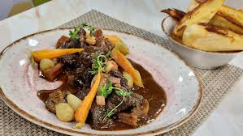

Receitas Favoritas
Receita Foie Gras

Foie gras é um delicado fígado de pato ou ganso, temperado e cozido, valorizado por sua textura aveludada e sabor luxuoso, sendo uma entrada refinada em alta gastronomia francesa.
Ingredientes:
- 1 peça de foie gras (fígado de pato ou ganso)
- Sal marinho a gosto
- Pimenta-do-reino moída a gosto
Passo a Passo
-
Preparação do Foie Grass:
- Remova o foie gras da geladeira e deixe descansar em temperatura ambiente por cerca de 30 minutos para amolecer.
- Com uma faca afiada. retire quaisquer veias ou imperfeições do fígado.
-
Temperatura de Cozimento:
- Pré-aqueça o forno a 100ºC.
-
Temperar:
- Tempere o foie gras com sal marinho e pimenta-do-reino moída a gosto. Certifique-se de que o tempero esteja distribuído uniformemente.
-
Cozimento:
- Coloque o foie gras temperado em uma terrine (recipiente de cerâmica) ou em uma assadeira pequena.
- Leve ao forno e asse por 20-25 minutos. A temperatura interna deve atingir cerca de 55-60ºC.
-
Resfriamento:
- Retire o foie gras do forno e deixe esfriar completamente.
- Cubra com papel alumínio e leve à geladeira por pelo menos 24 horas antes de servir.
-
Servir:
- Sirva o foie gras gelado, fatiado, acompanhado de torradas ou pão francês.
- Pode ser harmonizado com um vinho doce, como Sauternes, para realçar seu sabor.
Dicas:
- O foie gras é melhor servido frio e fatiado com uma faca quente para garantir cortes preciosos.
- Pode ser acompanhado de geleias ou frutas, como figos ou maças caramelizadas, para equilibrar o sabor rico.
Boeuf Bourguignon

O Boeuf Bourguignon é um prato clássico francês com carne bovina cozida em vinho tinto e caldo, enriquecido por legumes como cebola, cenoura e alho-poró, oferecendo uma experiência rica em sabores
Ingredientes:
- 1 kg de carne bovina cortada em cubos.
- 2 xícaras de vinho tinto
- 1 xícara de caldo de carne
- 2 cenouras em rodelas
- 1 cebola picada
- 1 alho-poró fatiado
- Sal e pimenta a gosto
- 2 colheres de sopa de farinha de trigo
- 2 colheres de sopa de óleo vegetal
Passo a Passo:>
Ratatouille

Coq au Vin